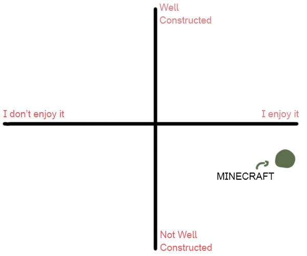
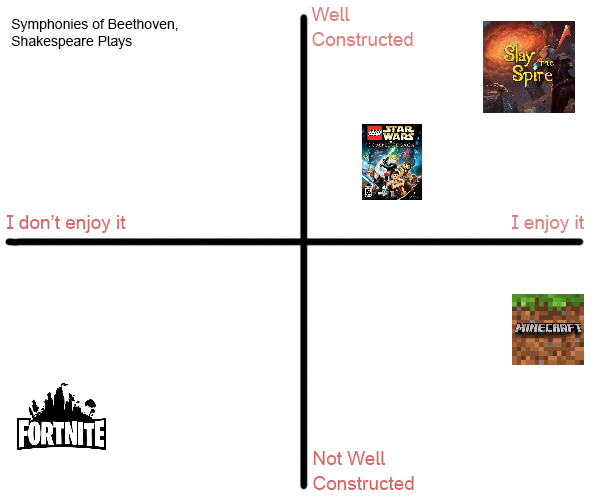

This page is going to be for stuff that I like and/or want to talk about dearly but isn't really tied to any of the other years. Expect posts to be un-ordered.
So, way back in the long long ago, I used to watch Ssundee play minecraft. This was 2014 - 2015, so I didn't know that you could watch good youtube videos yet (My parents caught me watching the Voltz red matter bomb yogscast clip when they heard the swearing through my headphones). Anyway, Ssundee was one of the founding members of Ninety9Lives, a music label aimed at content creators. They'd compile a bunch of music from different electronic artists, release them as compilation albums, and creators could use them in their videos. (like a knock off Monstercat basically).
I remember when the first song came out (Ascend by Kozoro, Ryzu, Unison and Evence). I listened to it once and distinctly remember not liking it. The specific thought of 'this isn't for me but people who like this will probably like it' is oddly clear in my mind, considering this memory is 10 years old.
Later that year I think, I'd come to revisit the songs, and really enjoy them. This was the first time I was really discovering music for myself. I listened to them a lot, and the first 8 albums hold a place in my heart. That first track, Ascend, is especially nostalgic for some reason. I revisit it often when I'm feeling melancholic.
I feel, a little, that I owe this game some degree of loyalty. After all, I've played the series a lot, and games (let alone popular ones) made in my home country are few and far between. That said... in the current year, I can't tell if I've grown past this game, or the game grew past me.
Launching it now is kind of an overwhelming cluster of popups and color, and purchasable extra bits. Farewell Bloons series, you'll be missed a little bit.
A couple albums that I got into around 2021 thanks to reccomendations from my old frenemy Spotify. They kind of exist in a bubble to me, in the sense that I haven't heard anyone else talk about them so I don't know if the're perceived as generally good or bad. I have similar problems with a lot of things, I think. Not knowing if things are good are bad. Born without a media literacy sector in the brain, maybe.
Also when I looked up Chiptune Memories to find it's release year, I found out that apparantly she (band) wrote a theme song for Dr Disrespect? Weird. I also found out there was a new No More Kings album in 2024, so maybe I'll listen to that sometime.
It's hard to put into words really what UNDERTALE is to me. I didn't play it first, I watched it. Jacksepticeye, if I recall. I was around in the right places and right time for it to really capture me as an interest. Not from a character perspective really, but from a 'lore' perspective. I've always been one to more enjoy learning hidden secrets and revelations in a story than to soak in it's characters or setting by reading fancomics or fanfic. Undertale gels really well with that specifically, because beneath it's surface lies a lot of obscured depth.
Not to forget the music either. Everyone knows that UNDERTALE has good music.
Minecraft is, perhaps, the video game I hold the most conflicted opions on. So much so, in fact, that I invented a whole chart to try and describe it to my friends, but they kind of got stuck on the semantics. Here it is:

To offer some explination, the graph exists to visualise that how "good" a thing is can be totally distinct from how much you enjoy the thing. I know 'goodness' isn't nessecarily onjective, but I'm using it in this sense to mean something closer to 'Created with a vision that was well executed, with intentionality and thought put into it'. Here's a version of the graph with more things:

All of that's to say, I don't think the game is that good. The more time I spend away from it, and the more other games I play that do similar things, the more this solidifies in my mind. Take, for example, the core gameplay loop. One could say the 'goal' of the game is to get to the end and beat the dragon, but this isn't really true. That entire process, from spawning in to getting eyes to locating the stronghold to killing the dragon, hasn't been updated since 2016. unless you count changes to the biomes you'd go through on the way there. 10 years! And the game's definitely had more than 10 updates in that time.
Looking at the updates that the game did get, it becomes clear what the truly intended 'goal' is. New flowers, new buidling blocks, new environments, new cute mobs. The 'goal' of Minecraft is to Hang Out. Minecraft now isn't aiming to be a complex challenging survival experience, or really a survival experience at all. It's a sandbox with vestigial survival roots.
The thing is, I'm not even sure it does a great job at that. It's extreme open-endedness, one of it's strengths, can also act as a double-edged sword. It's a sandbox that doesn't give you much direction, so you're nearly entirely responsible for finding your own fun. Like picking up a box of lego. This, I believe, is part of the reason that Minecraft servers have a reputation for not lasting more than a few weeks at a time. Making your own fun is only so sustainable.
This doesn't stop me from enjoying my time with it, though. I think at this point it's kind of a comfort thing, which is odd to say. After all, I got my account when I was 11, so I've been playing the game, on and off, for more than half of my life at this point (that was kind of scary to do the mental math on). At this point, the entire video game is contained within my muscle memory, it's intricacies ingrained into my subconscious. It's a comfort to come back, I can shut off my brain and hop around a world. That, and all of my friends play, so it's good for hanging out.
That entire essay out of the way, it's under boycott right now, so I'm not currently playing it.